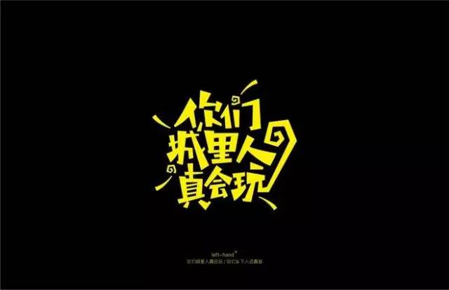

网络时代，汉语需要被“保卫”吗？
 1,833
1,833
很多很多年后，我们会记得“你不是一个人在战斗”，还是“岂曰无衣，与子同袍”；会记得“男默女泪”，还是“行人驻足听，寡妇起彷徨”？
网络日益普及，社交媒体高速发展，快速催生出新词、流行语。被多数人以“好玩儿”的心态迅速吸收、使用的网言网语，对于汉语——一个已经存在数千年的优秀古老语言意味着什么？
是新创意，还是污染源？能迅速发酵，会不会积累沉淀？而对奔袭而来的网言网语，汉语需不需要被“保卫”？
新词是怎样产生的？
近日，中国教育部和国家语委发布了《中国语言生活状况报告》，盘点了2015年的热词和流行语，包括“互联网＋”“世界那么大，我想去看看”“主要看气质”“重要的事情说三遍”等都榜上有名。
常年从事传媒语言研究的中国传媒大学教授侯敏则从2006年开始，每年都要编一本新词手册，收录当年出现的400到500个新词语。
在她看来，这些词语分为几类：
1．其中比较重要的一类是一年中出现的新的事物、现象、观念、认识和科技成果，比如“互联网＋”，有效保持和利用水资源的“海绵城市”，指代在线课程开发模式的“慕课”，伴随微信这个新事物出现的“点赞”等。
2．第二类是随着一些词语的语义磨损出现的替代词。比如当人们觉得说“很好”已经不足以形成巨大的冲击力时，会改说“巨好”、“超好”等，虽然“超”原本是一个动词。
3．第三类是网络上出现的减缩造词，比如前些年人们用得很多的“人艰不拆”“不明觉厉”“喜大普奔”“城会玩”“何弃疗”等。
事实上，全民造词的现象并非中国所独有。
在英国牛津大学出版社列出的2012年度网络热词中，“Omnishambles”就是利用构词法造出来表示“局面完全失控，出现系列差错和误算”的混乱状态。从“喜大普奔”到“Omnishambles”，你或许能看到相似的地方。
“其实每年都会出现新词和新的流行语，反映出社会变化和变革。”侯敏说，“这些词中，有些可能转瞬即逝，有些则可能被一直保留在我们的语言中。”
什么词能留下来？
深谙古汉语一度让彭敏成为“网红”。
33岁的彭敏小时候最早读的是《唐诗三百首》和《古文观止》。对古汉语的浓厚兴趣让他成为2015年中国成语大会和中国汉字听写大会的双料年度总冠军。
在彭敏看来，中国民间对于汉语言的介入改造从古至今从未停止过。
汉语言的变迁
“周朝的时候就有专门的采诗官，到各地去采集民间的歌谣，把民间的当时的流行语言记录下来。”
随着中国的发展，语言也有了很大的变化。“到了元朝，语言中俗语越来越多，假如李白看到了关汉卿写的东西，说不定会觉得语言被糟蹋了。”
“到了新文化运动之后，很多新的词进入了字典。比如‘对号入座’，古人如果看了可能会觉得很俗，他们不一定理解什么是‘号’。”
侯敏对此表示认同。“社会变化越快，新词语出现得也就越快越多。”她说，“试想在一个男耕女织的宁静乡村，可能很多年语言都不会有太大变化。”
新的词语能有多强的生命力？
侯敏曾经对2006到2010年中出现的2976个新词语在2011年的使用状况进行了分析。
其中，有170个词语在主流媒体十几亿字的语料库中，一年被使用超过1000次，比如“微博”“保障房”“动车组”“醉驾”“给力”等，占总数的5.71%，370个词语年使用频次在100到999之间，包括“学区房”“囧”“人肉搜索”“凤凰男”等，占总数12.43%，686个年使用频次在10到99之间，比如“孩奴”“脖友”等，占总数23.04%。
余下的有四分之一在低频使用中，还有三分之一彻底被遗忘。比如，还有多少人记得，什么是“撞峰”，什么是“裸烟”，“楼断断”又是什么典故？
一般能够被留下的那部分词语大多是用来描述新出现的事物。根据一些句子的缩减造词，如果那个句子不是特别常用，通常会慢慢消亡。
一些流行语甚至走进了被认为是最重要汉字教育读本的《新华字典》。在第十一版中字典里出现了“晒”“奴”和“门”等字在网络上的用法。
比如：
“晒”的解释是“展示，多指在网络上公开透露自己的信息”，例如“晒工资”；
“奴”的解释是“为了支付贷款等而不得不拼命工作的人”，例如“房奴”；
“门”的解释是“事件，多指负面的事件”，例如“学历门”。

入侵还是注入活力？
对于迅速出现的新词汇，有人表示接受，有人表示质疑：它们究竟是为汉语注入新的活力，还是“污染”了汉语？
2015年《中国青年报》一个问卷调查结果显示，1601名受访者中64.2%认为当下网络流行语入侵汉语现象严重，46%的受访者担心会污染汉语。
网络带火了将传统与流行融合的他：
2012年，张方曾经结合当时很火的“杜甫很忙”系列图片把流行歌曲《最炫民族风》歌词每句改成了杜甫的诗，引得网友大呼“太有才了”。
后来他又用古风来翻译网上的流行语。比如“能靠长相吃饭却偏偏要靠才华”，他翻译成“陌上公子颜如玉，偏向红尘费思绪”；“我的内心几乎是崩溃的”，翻译成“吾心已溃，如崩如坠”；“重要的事情说三遍”，翻译成“言一隅，当以三隅反复之”；“你咋不上天呢”，翻译成“何不乘风归去，莫惧琼楼玉宇”。
张方说：
有些人觉得古典很遥远。因此我这样做，是希望能够借助社会与网络热点的平台把古文推广出去。我们现在看到的古文、古诗是经过了几千年大浪淘沙之后得以保留的，生命力不强的都已经被淘汰了，留下的都是精华中的精华，而出现的这些新词、流行语，到了千百年后说不定只能剩下一两句了。
侯敏对这个自然选择的过程表示认同。“在古代，没有电视和手机，很多人把语言的锤炼当成一大乐事，他们对自己的文字很敬畏，因此才会‘吟安一个字，捻断数茎须’。”她说，“现在人失去了这种敬畏。”
“应该让人们回归对语言的敬畏，让孩子知道什么是语言之美。”她说。
来源：新华网